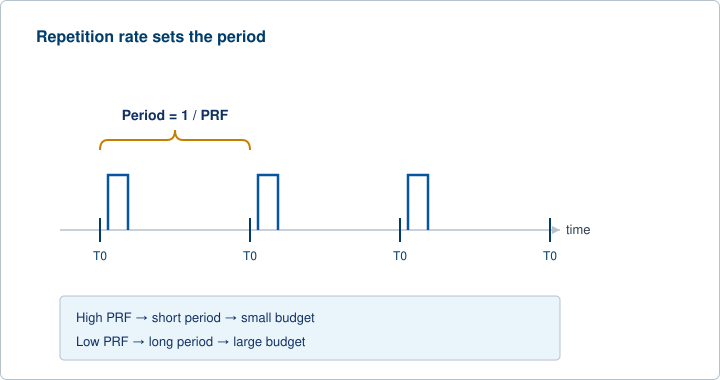
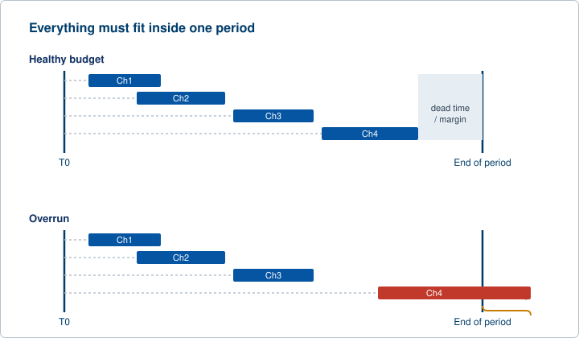
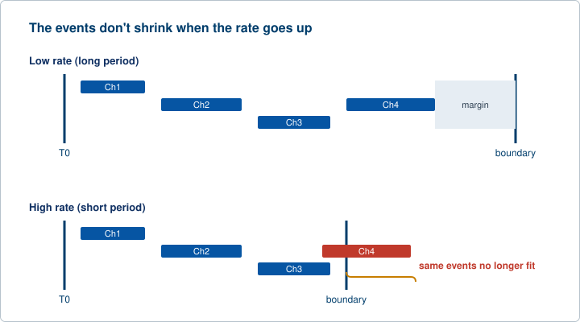
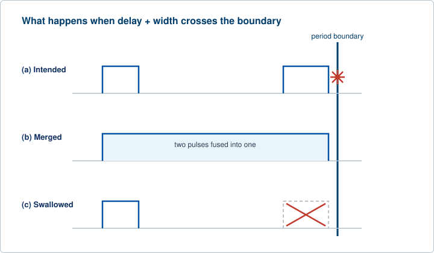

Chapter 4 set up the channels. This chapter sets the clock that drives them all and shows what happens when too much timing is asked to fit inside too little time. Every channel in a multi-channel instrument lives inside one repeating cycle. The length of that cycle is the time budget, and every delay, every width, and every gap between events has to be paid for out of it. When the budget runs short, channels start to collide. Those collisions are overlap conditions, and they are the central hazard of multi-signal work. This chapter covers how the repetition rate sets the budget, how to plan many signals so they all fit, and how to recognize and avoid overlap before it ruins a measurement.
A free-running pulse generator does not wait for the outside world. It triggers itself, over and over, at a rate it generates internally. That rate is the pulse repetition rate, also called the pulse repetition frequency, or PRF. Rate and frequency describe the same thing for a periodic source: how often the cycle repeats. PRF is the number of pulses per second. The period is its reciprocal, the time from the start of one cycle to the start of the next. An operator sets either the rate or the period, whichever is natural for the task. A laser that wants 10 kHz is set by rate. A measurement that wants a 1 ms window between shots is set by period. They are two ways of writing the same number.
The piece of the instrument that produces this rate is the internal rate generator. It is a programmable oscillator that fires the start of every cycle. When the instrument runs internally, the rate generator is the master timekeeper that defines T0 for each cycle, and every channel hangs its delay off that T0. When the instrument runs externally, the rate generator steps aside and an outside trigger sets the rhythm instead. Either way, the period is what every channel has to live inside.

Duty cycle ties pulse width to period. It is the fraction of each period during which the output is high, written as a percentage. A 100 ns pulse repeating every 1 ms has a duty cycle of one hundredth of one percent. The same 100 ns pulse repeating every 200 ns has a duty cycle of fifty percent. Nothing about the pulse changed. The period did. Duty cycle is the number that usually decides how hard a load can be driven, because average power scales with it. A high duty cycle on a load that dissipates heat is often the first thing that limits how fast an instrument can be run, well before the timing electronics run out of room.
Burst mode adds a second rate to keep straight. In a burst, the instrument emits a defined number of pulses, then waits. Two rates are in play. The first is the rate of pulses inside the burst, the intra-burst rate. The second is the rate at which whole bursts repeat. They are different numbers, and confusing them is a common programming mistake. A burst of five pulses at 1 MHz, repeating every 10 ms, has a 1 MHz intra-burst rate and a 100 Hz burst repeat rate. Both have to fit their own budget: the five pulses have to fit inside the burst, and the burst has to fit inside the repeat period.
A single channel inside a period is easy. The trouble starts when six or eight or twenty-four channels share that one period, each with its own delay and width, some of them gated, some chained to others. The job becomes one of budgeting. The rule is simple to state and easy to violate: the sum of what every channel needs has to fit inside the period, with margin.
Think of the period as a fixed-length bar. Each channel claims a slice of it, starting at its delay after T0 and running for its width. Add dead time where the load needs to recover or settle between events. Lay all of those slices into the bar. If they fit with room to spare, the program is healthy. If the last event runs past the right edge of the bar, it has run past the end of the period, and it collides with the next cycle. That collision is the overlap condition that the next section is built around.

Dead time deserves its own line in the budget. It is the deliberate gap left between events, or between the last event and the end of the period. Some of it protects the load, giving a detector time to reset or a driver time to settle. Some of it protects the timing itself, leaving margin so that jitter and small parameter changes do not push an edge across a boundary. A program that fills the period to the last nanosecond has no dead time, and it has no defense against the next small edit.
The hard part is that raising the rate shrinks the budget. PRF and period are reciprocals, so doubling the rate halves the period. Every delay and width that fit comfortably at the old rate now has half the room. An operator who pushes the rate up to gather data faster is quietly shrinking the bar that all the channels have to fit inside. At some rate, the longest delay-plus-width on any channel no longer fits, and the program that worked yesterday produces overlap today. The rate is not free. It is spent out of the same budget as everything else.

Planning a multi-channel timeline, then, is the discipline of laying out all of the events against one period and confirming the longest one fits with margin before committing to a rate. Map each channel's delay and width. Add the dead time. Find the channel whose delay-plus-width reaches furthest into the period. Make sure that furthest reach lands inside the period with room left over. Only then set the rate. Do it in the other order, rate first, and the collisions find you instead.
Overlap is where well-formed timing programs quietly go wrong. The numbers all look reasonable on their own. The conflict appears only when they are combined, and the instrument is handed a program it cannot satisfy literally. This section is the heart of the chapter, because recognizing overlap on a bench is a skill that separates a clean multi-channel setup from a mystifying one.
An overlap condition occurs when the programmed timing asks a channel, or a shared resource, to do two incompatible things at once. It takes two classic forms.
The first form is a single channel asked to fire again before its current pulse has ended. The channel's delay plus its width runs past the start of the next cycle, or past the next external trigger. The pulse from this cycle has not finished when the instrument is told to begin the next one. The channel cannot be both high for the rest of the old pulse and starting a new pulse at the same instant. The program is internally inconsistent.
The second form is two events colliding on a shared resource or the same time slot. Two channels mapped to one physical output, as in a multiplex configuration, are told to drive that output at the same time. Or two timing requests collide inside a shared logic block. The resource can only do one thing at that instant, and it has been asked for two. Again the program cannot be honored as written.

Overlap is rarely a typo. It emerges from parameters that interact. An operator widens a pulse and forgets that the channel's delay already places it late in the period, so the wider pulse now runs off the end. An operator raises the rate to collect more shots and shrinks the period below the longest delay-plus-width on the instrument. An operator chains one channel to another, then slides the reference channel, and the dependent channel rides along until it crosses the boundary. Each edit is sensible by itself. The conflict is born from the combination, which is exactly why it is easy to miss.
The guidance here is deliberate: do not expect one single behavior. Different instruments, and different settings on the same instrument, resolve overlap in different ways. What matters is knowing the full range of outcomes so they can be recognized. They fall into two groups, by where the conflict is handled.
At the hardware level, the instrument produces whatever the electronics do when handed an impossible request, and the result shows up on a scope.
At the programming level, the instrument never lets the conflict reach the hardware at all.
Because the same conflicting program can give different visible results depending on which rule an instrument follows, the operator's job is to know which behavior is in play for the instrument on the bench. A program that gets quietly swallowed on one path might be flatly rejected on another. Neither outcome is the program the operator wanted. Both are signs that the budget was overrun.
The discipline is straightforward once the failure mode is understood. Most of it is the budgeting from Section 5.2, applied with intent.
Setting up a complex multi-channel experiment comes down to this. Lay the events inside the period, leave dead time, confirm the longest reach fits with margin, set the rate last, and after every change walk the timeline again. Overlap is not bad luck. It is a budget that was overspent, and the budget is always visible if it is checked.
Check your understanding. Five quick questions on PRF and period, duty cycle, the period budget, overlap conditions, and how overlap shows up on the bench.